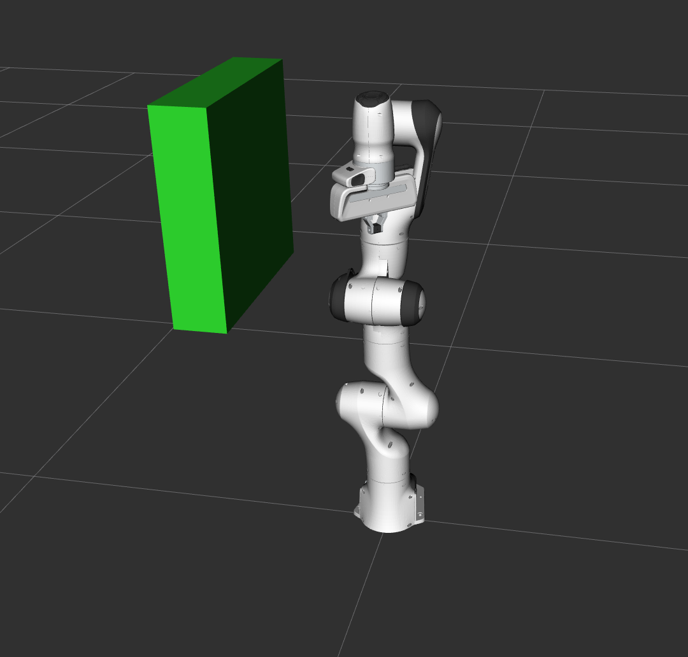
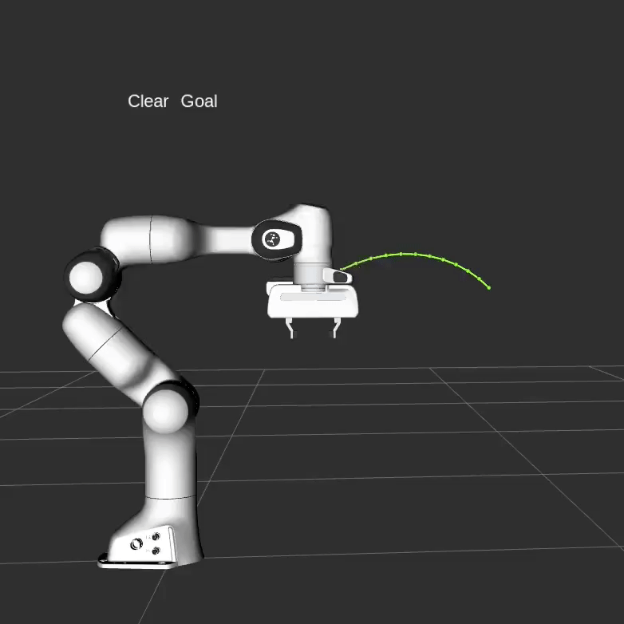
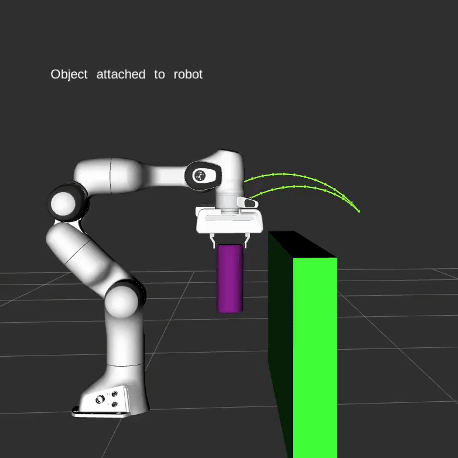

移动组 (Move Group) 的 C++ 接口¶

在 MoveIt 里，最简单的用户接口是 MoveGroupInterface 类。这个类为用户想要执行的大多数操作提供了简便的功能，特别是设置关节或目标姿态，创建运动规划，移动机器人，添加对象到环境里和附加/分离对象到机器人上。此接口借助 ROS 的 topics 、services 和 actions 来和 MoveGroup 节点 通信。
观看这个简短的 YouTube 演示视频 ，看看 Move Group 接口的能力吧！
运行代码¶
打开两个 shell 。在第一个 shell 中启动 RViz ，并等待所有加载工作完成：
roslaunch panda_moveit_config demo.launch
在第二个 shell 里，运行 launch 文件：
roslaunch moveit_tutorials move_group_interface_tutorial.launch
注意: 本教程使用 RvizVisualToolsGui 面板来逐步完成演示。 要将此面板添加到 RViz ，请参考 可视化教程 。
RViz 窗口过一会儿就会出现，看起来和本页面顶部的窗口差不多。想要依次查看每个演示步骤，要么按下窗口底部 RvizVisualToolsGui 面板里的 Next 按钮，或者在 RViz 窗口聚焦状态下，选择窗口顶部 Tools 面板下的 Key Tool ，然后按下键盘上的 N 。
预期效果¶
可以通过本页教程顶部的 YouTube 视频 来查看预期效果。在 RViz 里，我们应该能看到以下效果：
机器人将手臂移动到前面的目标位置。
机器人将其手臂移动到其一侧的目标关节位置处。
在保持末端执行器水平的同时，机器人将其手臂移动至一个新的目标姿态。
机器人沿着期望的笛卡尔路径移动手臂(沿着下、右、前左方的一个三角形路径)。
将一个 box 对象添加到手臂右侧的环境中。 
机器人将手臂移动到目标位置，同时避免了与 box 碰撞。
将一个物体固连到了手腕(其颜色将依次变为紫色、橙色、绿色)。
该物体与腕部分离(其颜色将恢复为绿色)。
将该物体从环境中移除。
整个代码¶
全部代码可以在 MoveIt GitHub project 里找到。接下来，我们逐步分析代码来解释其功能。
设置¶
MoveIt 操作一组关节(被称为 “planning groups”), 并将它们存储在一个名为 JointModelGroup 的对象中。在整个 MoveIt 中，术语 “planning groups” 和 “joint model group” 可互相指代。
static const std::string PLANNING_GROUP = "panda_arm";
MoveGroupInterface 类可以很方便的用你希望控制和规划的 planning group 的名字来初始化。
moveit::planning_interface::MoveGroupInterface move_group(PLANNING_GROUP);
我们将使用 PlanningSceneInterface 类在我们的 “virtual world” 场景中添加和删除碰撞对象
moveit::planning_interface::PlanningSceneInterface planning_scene_interface;
这里的原始指针经常用于引用 planning group ，从而来提高程序性能。
const moveit::core::JointModelGroup* joint_model_group =
move_group.getCurrentState()->getJointModelGroup(PLANNING_GROUP);
可视化¶
MoveItVisualTools 包提供了 RViz 里许多将物体、机器人 和轨迹可视化的功能，还提供了一些调试工具，如脚本的逐步运行。
namespace rvt = rviz_visual_tools;
moveit_visual_tools::MoveItVisualTools visual_tools("panda_link0");
visual_tools.deleteAllMarkers();
远程控制是一种自我审查工具，允许用户通过 RViz 中的按钮和快捷键来逐步地执行高级脚本。
visual_tools.loadRemoteControl();
RViz 提供了许多类型的 markers，在本 demo 中，我们将使用文本，圆柱体和球体
Eigen::Isometry3d text_pose = Eigen::Isometry3d::Identity();
text_pose.translation().z() = 1.0;
visual_tools.publishText(text_pose, "MoveGroupInterface Demo", rvt::WHITE, rvt::XLARGE);
批量发布上述数据，用于减少发送给 RViz 进行大型可视化的消息数量
visual_tools.trigger();
获得基础信息¶
我们可以打印这个机器人的参考系的名字。
ROS_INFO_NAMED("tutorial", "Planning frame: %s", move_group.getPlanningFrame().c_str());
我们也可以打印这个 planning group 的末端执行器的 link 的名称。
ROS_INFO_NAMED("tutorial", "End effector link: %s", move_group.getEndEffectorLink().c_str());
我们可以得到机器人中所有 planning group 的列表:
ROS_INFO_NAMED("tutorial", "Available Planning Groups:");
std::copy(move_group.getJointModelGroupNames().begin(), move_group.getJointModelGroupNames().end(),
std::ostream_iterator<std::string>(std::cout, ", "));
开始 demo¶
visual_tools.prompt("Press 'next' in the RvizVisualToolsGui window to start the demo");
目标位姿规划¶
我们可以为这个 planning group 规划一个想要达到的 末端执行器目标位姿。
geometry_msgs::Pose target_pose1;
target_pose1.orientation.w = 1.0;
target_pose1.position.x = 0.28;
target_pose1.position.y = -0.2;
target_pose1.position.z = 0.5;
move_group.setPoseTarget(target_pose1);
现在，我们使用规划器 (planner) 来计算这个运动规划，并将其可视化。 注意，我们只是在进行规划，而不是要求 move_group 真的让机器人运动。
moveit::planning_interface::MoveGroupInterface::Plan my_plan;
bool success = (move_group.plan(my_plan) == moveit::planning_interface::MoveItErrorCode::SUCCESS);
ROS_INFO_NAMED("tutorial", "Visualizing plan 1 (pose goal) %s", success ? "" : "FAILED");
可视化规划结果¶
我们也可以把规划结果显示为一条在 RViz 里带有 marker 的线。
ROS_INFO_NAMED("tutorial", "Visualizing plan 1 as trajectory line");
visual_tools.publishAxisLabeled(target_pose1, "pose1");
visual_tools.publishText(text_pose, "Pose Goal", rvt::WHITE, rvt::XLARGE);
visual_tools.publishTrajectoryLine(my_plan.trajectory_, joint_model_group);
visual_tools.trigger();
visual_tools.prompt("Press 'next' in the RvizVisualToolsGui window to continue the demo");
移动到该目标位姿¶
移动到目标位姿和上面的步骤差不多， 只不过我们现在使用 move() 函数。注意， 我们之前设置的目标位姿仍然是有效的， 所以机器人将尝试向这个目标位姿。 在本教程中，我们将不使用该函数， 因为它是一个阻塞函数，而且需要控制器 (controller) 处于有效状态， 并且能在轨迹执行时报告成功。
/* 在使用真实机器人时取消下行注释 */
/* move_group.move(); */
在关节空间进行规划¶
让我们在关节空间里设定一个目标状态，并朝着这个目标状态运动。 这将取代我们上面设置过的目标位姿。
首先，我们将创建一个指向当前机器人状态的指针。 RobotState 是一个储存当前所有位置、速度、加速度信息的对象。
moveit::core::RobotStatePtr current_state = move_group.getCurrentState();
接下来，获取该 planning group 的当前关节值。
std::vector<double> joint_group_positions;
current_state->copyJointGroupPositions(joint_model_group, joint_group_positions);
现在，让我们修改一个关节，为这个新的目标关节空间状态进行规划，然后可视化规划结果。
joint_group_positions[0] = -1.0; // 弧度
move_group.setJointValueTarget(joint_group_positions);
我们将允许的最大速度和加速度降低到其对应限制的 5%， 其默认值是 10% (0.1)。 在机器人的 moveit_config 包里的 joint_limits.yaml 文件中设置你的首选默认值， 或在代码中设置这个缩放因子（例如需要机器人运动更快）。
move_group.setMaxVelocityScalingFactor(0.05);
move_group.setMaxAccelerationScalingFactor(0.05);
success = (move_group.plan(my_plan) == moveit::planning_interface::MoveItErrorCode::SUCCESS);
ROS_INFO_NAMED("tutorial", "Visualizing plan 2 (joint space goal) %s", success ? "" : "FAILED");
在 RViz 里可视化规划结果
visual_tools.deleteAllMarkers();
visual_tools.publishText(text_pose, "Joint Space Goal", rvt::WHITE, rvt::XLARGE);
visual_tools.publishTrajectoryLine(my_plan.trajectory_, joint_model_group);
visual_tools.trigger();
visual_tools.prompt("Press 'next' in the RvizVisualToolsGui window to continue the demo");
含姿态约束的运动规划¶
我们可以轻松地为机器人上的 link 指定姿态约束。 让我们为这个 planning group 指定姿态约束和目标位姿。 首先定义姿态约束。
moveit_msgs::OrientationConstraint ocm;
ocm.link_name = "panda_link7";
ocm.header.frame_id = "panda_link0";
ocm.orientation.w = 1.0;
ocm.absolute_x_axis_tolerance = 0.1;
ocm.absolute_y_axis_tolerance = 0.1;
ocm.absolute_z_axis_tolerance = 0.1;
ocm.weight = 1.0;
现在，将其设置为该 planning group 的姿态约束。
moveit_msgs::Constraints test_constraints;
test_constraints.orientation_constraints.push_back(ocm);
move_group.setPathConstraints(test_constraints);
强制在关节空间里进行规划¶
根据规划问题，MoveIt 选择在关节空间 joint space 或
笛卡尔空间 cartesian space 来表达问题。
在 ompl_planning.yaml 文件中设置 enforce_joint_model_state_space:true
将对所有计划强制使用关节空间 joint space。
默认情况下，含姿态约束的运动规划请求将在笛卡尔空间 cartesian space
里采样，因此将调用 IK
服务作为采样生成器。
当强制使用关节空间 joint space 时，规划过程将使用拒绝采样 (reject sampling)
来找到有效的请求。
请注意，这可能会大大增加规划过程的计算时间。
我们仍然使用先前设置的规划目标并对再次规划。 请注意，这仅在当前机器人状态已满足姿态约束的情况下才能进行规划计算， 因此我们需要将初始状态设置为 一个新的位姿。
moveit::core::RobotState start_state(*move_group.getCurrentState());
geometry_msgs::Pose start_pose2;
start_pose2.orientation.w = 1.0;
start_pose2.position.x = 0.55;
start_pose2.position.y = -0.05;
start_pose2.position.z = 0.8;
start_state.setFromIK(joint_model_group, start_pose2);
move_group.setStartState(start_state);
现在，我们将从刚创建的初始状态开始，规划运动到 先前定义的目标位姿。
move_group.setPoseTarget(target_pose1);
有约束的规划过程可能会很慢，因为每次采样都必须调用逆运动学求解器。 让我们修改默认的 5 秒规划时间，以确保规划器 (planner) 有足够的时间来获得成功的规划结果。
move_group.setPlanningTime(10.0);
success = (move_group.plan(my_plan) == moveit::planning_interface::MoveItErrorCode::SUCCESS);
ROS_INFO_NAMED("tutorial", "Visualizing plan 3 (constraints) %s", success ? "" : "FAILED");
在 RViz 里可视化规划结果。
visual_tools.deleteAllMarkers();
visual_tools.publishAxisLabeled(start_pose2, "start");
visual_tools.publishAxisLabeled(target_pose1, "goal");
visual_tools.publishText(text_pose, "Constrained Goal", rvt::WHITE, rvt::XLARGE);
visual_tools.publishTrajectoryLine(my_plan.trajectory_, joint_model_group);
visual_tools.trigger();
visual_tools.prompt("next step");
完成含姿态约束的规划后，请务必从 move_group 里清除它。
move_group.clearPathConstraints();
笛卡尔路径规划¶
您可以通过一系列末端执行器要通过的沿途路径点来直接进行笛卡尔路径规划。 请注意，我们从先前设置的新初始状态开始。 无需将初始位姿（开始状态）添加到沿途路径点列表， 但添加了可以提升可视化效果。
std::vector<geometry_msgs::Pose> waypoints;
waypoints.push_back(start_pose2);
geometry_msgs::Pose target_pose3 = start_pose2;
target_pose3.position.z -= 0.2;
waypoints.push_back(target_pose3); // 下
target_pose3.position.y -= 0.2;
waypoints.push_back(target_pose3); // 右
target_pose3.position.z += 0.2;
target_pose3.position.y += 0.2;
target_pose3.position.x -= 0.2;
waypoints.push_back(target_pose3); // 上左
我们希望以 1 cm 的精度插值笛卡尔路径， 这就是为什么我们在笛卡尔换算 computeCartesianPath() 函数中将最大步长设置为 0.01 的原因。 我们将 jump_threshold 设置为 0.0 以禁用跳跃阈值。 警告 - 在在实际硬件上执行规划结果时，禁用 jump_threshold 可能会导致冗余关节进行大量无法预测的运动， 并且可能会带来安全问题。
moveit_msgs::RobotTrajectory trajectory;
const double jump_threshold = 0.0;
const double eef_step = 0.01;
double fraction = move_group.computeCartesianPath(waypoints, eef_step, jump_threshold, trajectory);
ROS_INFO_NAMED("tutorial", "Visualizing plan 4 (Cartesian path) (%.2f%% acheived)", fraction * 100.0);
在 RViz 可视化结果。
visual_tools.deleteAllMarkers();
visual_tools.publishText(text_pose, "Cartesian Path", rvt::WHITE, rvt::XLARGE);
visual_tools.publishPath(waypoints, rvt::LIME_GREEN, rvt::SMALL);
for (std::size_t i = 0; i < waypoints.size(); ++i)
visual_tools.publishAxisLabeled(waypoints[i], "pt" + std::to_string(i), rvt::SMALL);
visual_tools.trigger();
visual_tools.prompt("Press 'next' in the RvizVisualToolsGui window to continue the demo");
笛卡尔运动过程中常常会很慢，比如在接近物体的时候。The speed of cartesian 当前无法通过 maxVelocityScalingFactor 设置笛卡尔规划的速度，需要你手动安排运动轨迹的时间分布 (如 此处 所述) 欢迎 pull request 。
你可以这样来执行轨迹。
move_group.execute(trajectory);
向环境添加对象¶
首先，让我们在没有对象的情况下进行一个简单的轨迹规划。
move_group.setStartState(*move_group.getCurrentState());
geometry_msgs::Pose another_pose;
another_pose.orientation.x = 1.0;
another_pose.position.x = 0.7;
another_pose.position.y = 0.0;
another_pose.position.z = 0.59;
move_group.setPoseTarget(another_pose);
success = (move_group.plan(my_plan) == moveit::planning_interface::MoveItErrorCode::SUCCESS);
ROS_INFO_NAMED("tutorial", "Visualizing plan 5 (with no obstacles) %s", success ? "" : "FAILED");
visual_tools.deleteAllMarkers();
visual_tools.publishText(text_pose, "Clear Goal", rvt::WHITE, rvt::XLARGE);
visual_tools.publishTrajectoryLine(my_plan.trajectory_, joint_model_group);
visual_tools.trigger();
visual_tools.prompt("next step");
结果像这样:
现在，我们为机器人定义一个碰撞体的 ROS 消息。
moveit_msgs::CollisionObject collision_object;
collision_object.header.frame_id = move_group.getPlanningFrame();
设置对象的 id 用于辨识。
collision_object.id = "box1";
定义一个 box, 并添加到世界。
shape_msgs::SolidPrimitive primitive;
primitive.type = primitive.BOX;
primitive.dimensions.resize(3);
primitive.dimensions[primitive.BOX_X] = 0.1;
primitive.dimensions[primitive.BOX_Y] = 1.5;
primitive.dimensions[primitive.BOX_Z] = 0.5;
定义 box 的位姿(相对于 frame_id)
geometry_msgs::Pose box_pose;
box_pose.orientation.w = 1.0;
box_pose.position.x = 0.5;
box_pose.position.y = 0.0;
box_pose.position.z = 0.25;
collision_object.primitives.push_back(primitive);
collision_object.primitive_poses.push_back(box_pose);
collision_object.operation = collision_object.ADD;
std::vector<moveit_msgs::CollisionObject> collision_objects;
collision_objects.push_back(collision_object);
现在，让我们将碰撞体添加到世界中。 (这里使用了一个 vector 即可以添加多个对象。)
ROS_INFO_NAMED("tutorial", "Add an object into the world");
planning_scene_interface.addCollisionObjects(collision_objects);
在 RViz 中显示状态文本，并等待 MoveGroup 接收和处理碰撞体消息。
visual_tools.publishText(text_pose, "Add object", rvt::WHITE, rvt::XLARGE);
visual_tools.trigger();
visual_tools.prompt("Press 'next' in the RvizVisualToolsGui window to once the collision object appears in RViz");
现在，当我们规划轨迹时，它将会避开障碍物。
success = (move_group.plan(my_plan) == moveit::planning_interface::MoveItErrorCode::SUCCESS);
ROS_INFO_NAMED("tutorial", "Visualizing plan 6 (pose goal move around cuboid) %s", success ? "" : "FAILED");
visual_tools.publishText(text_pose, "Obstacle Goal", rvt::WHITE, rvt::XLARGE);
visual_tools.publishTrajectoryLine(my_plan.trajectory_, joint_model_group);
visual_tools.trigger();
visual_tools.prompt("Press 'next' in the RvizVisualToolsGui window once the plan is complete");
结果大概像这样:

将物体固连到机器人¶
你可以将对象固连到机器人，以使其随机器人一起移动。 这模拟了机器人拾取物体以进行操作。 运动规划结果还应避免了物体之间发生碰撞。
moveit_msgs::CollisionObject object_to_attach;
object_to_attach.id = "cylinder1";
shape_msgs::SolidPrimitive cylinder_primitive;
cylinder_primitive.type = primitive.CYLINDER;
cylinder_primitive.dimensions.resize(2);
cylinder_primitive.dimensions[primitive.CYLINDER_HEIGHT] = 0.20;
cylinder_primitive.dimensions[primitive.CYLINDER_RADIUS] = 0.04;
我们定义该圆柱的坐标系/位姿，使其出现在末端夹爪里。
object_to_attach.header.frame_id = move_group.getEndEffectorLink();
geometry_msgs::Pose grab_pose;
grab_pose.orientation.w = 1.0;
grab_pose.position.z = 0.2;
首先，我们将对象添加到世界中（不使用 vector）
object_to_attach.primitives.push_back(cylinder_primitive);
object_to_attach.primitive_poses.push_back(grab_pose);
object_to_attach.operation = object_to_attach.ADD;
planning_scene_interface.applyCollisionObject(object_to_attach);
然后，我们将对象 “attach” 到机器人。它使用 frame_id 来确定它连接到哪一个机器人 link。 您还可以使用 applyAttachedCollisionObject 将对象直接附加到末端夹爪。
ROS_INFO_NAMED("tutorial", "Attach the object to the robot");
move_group.attachObject(object_to_attach.id, "panda_hand");
visual_tools.publishText(text_pose, "Object attached to robot", rvt::WHITE, rvt::XLARGE);
visual_tools.trigger();
/* 等待 MoveGroup 接收并处理被固连的碰撞体消息 */
visual_tools.prompt("Press 'next' in the RvizVisualToolsGui window once the new object is attached to the robot");
现在夹爪已固连了一个物体，我们重新规划轨迹。
move_group.setStartStateToCurrentState();
success = (move_group.plan(my_plan) == moveit::planning_interface::MoveItErrorCode::SUCCESS);
ROS_INFO_NAMED("tutorial", "Visualizing plan 7 (move around cuboid with cylinder) %s", success ? "" : "FAILED");
visual_tools.publishTrajectoryLine(my_plan.trajectory_, joint_model_group);
visual_tools.trigger();
visual_tools.prompt("Press 'next' in the RvizVisualToolsGui window once the plan is complete");
结果大概像这样:
分离并删除物体¶
现在，让我们从机器人的夹爪上取下圆柱体。
ROS_INFO_NAMED("tutorial", "Detach the object from the robot");
move_group.detachObject(object_to_attach.id);
在 RViz 里显示状态文本
visual_tools.deleteAllMarkers();
visual_tools.publishText(text_pose, "Object detached from robot", rvt::WHITE, rvt::XLARGE);
visual_tools.trigger();
/* 等待 MoveGroup 接收并处理被固连的碰撞体消息 */
visual_tools.prompt("Press 'next' in the RvizVisualToolsGui window once the new object is detached from the robot");
现在，让我们从世界里删除这个物体。
ROS_INFO_NAMED("tutorial", "Remove the objects from the world");
std::vector<std::string> object_ids;
object_ids.push_back(collision_object.id);
object_ids.push_back(object_to_attach.id);
planning_scene_interface.removeCollisionObjects(object_ids);
在 RViz 里显示状态文本
visual_tools.publishText(text_pose, "Objects removed", rvt::WHITE, rvt::XLARGE);
visual_tools.trigger();
/* 等待 MoveGroup 接收并处理被固连的碰撞体消息 */
visual_tools.prompt("Press 'next' in the RvizVisualToolsGui window to once the collision object disapears");
关于精度设置的说明¶
注意 MoveGroupInterface 中的 setGoalTolerance() 及其相关方法是为 规划过程（planning） 设置精度，而不是设置执行过程（execution）的精度。
如果你想配置执行过程中的精度，且使用了一个 FollowJointTrajectory 控制器（controller），你必须编辑 controller.yaml 文件，或者手动将其添加到从规划器（planner）生成的轨迹消息中。
开源反馈
有地方需要改进？请在 GitHub page 新开一个 pull request。